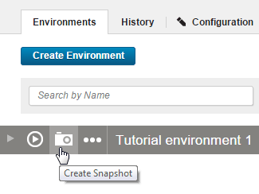
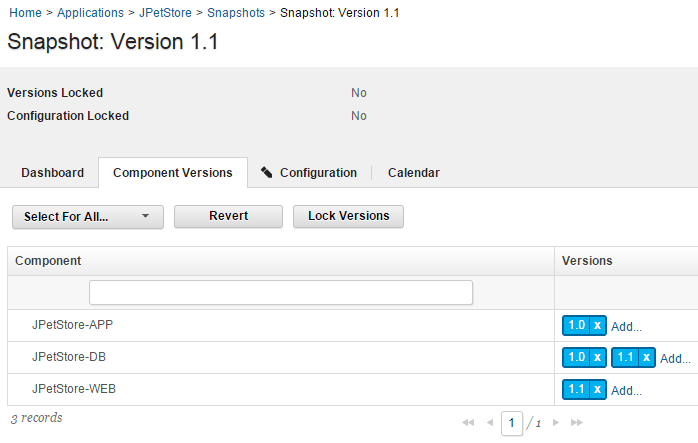
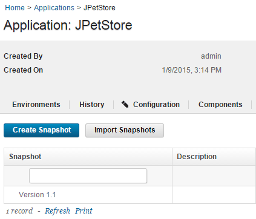

Lesson 1: Adding snapshots
Creating a snapshot involves saving a collection of component versions that are part of an application.
These steps describe how to create a snapshot that uses components of the sample application. In the Deploying a simple web application tutorial, you deployed the JPetStore application twice to the same environment. In the second deployment, you used two components that contain new information. In this lesson, you create a snapshot that uses the same components as the deployed environment. You create a snapshot from a functioning development environment in preparation for deployment to the next phase of your continuous delivery pipeline. In a later lesson, you deploy this snapshot to a new environment. By deploying with snapshots in HCL UrbanCode Deploy, you can quickly bring a new environment to a specific state.
Before you begin: Make sure that your HCL UrbanCode Deploy server has the prerequisites that are listed in Prerequisites and that you completed the steps in Configuring the server and target system.
- Click the Applications tab, and then click JPetStore.
-
In the same row as your environment, click the Create Snapshot icon, as shown in the following figure:

-
In the Create Snapshot window, specify the name to be Version 1.1.
- Accept the default values in the other field, and then click Save.
-
Click the Component Versions tab. The snapshot is shown as in the following image:

The JPetStore-DB component uses incremental versions and must contain both the 1.0 and 1.1 versions to deploy. If the JPetStore-DB component does not contain both versions, you must update the component version. See Configuring the server and target system.
In this lesson, you added a snapshot to the application. The snapshot is based on the components in the application that are currently deployed to an environment.
On the application's Snapshots page, you have a snapshot, as shown in the following figure:

In the next lesson, you create an environment to for the next step in the JPetStore application's delivery pipeline.
After you create a snapshot that describes a collection of components, you can deploy the snapshots to an environment. In the next lesson, you create another environment.
For more information about creating snapshots, see Creating snapshots.
Parent topic: Creating and deploying snapshots